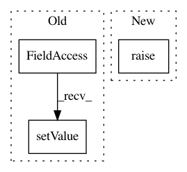

993fcea2466ef5acd549ed949f1843432a010680,ilastik/workflows/objectClassification/objectClassificationWorkflow.py,ObjectClassificationWorkflowGraphcut,setupInputs,#ObjectClassificationWorkflowGraphcut#,655
Before Change
instructionText=data_instructions )
opData = self.dataSelectionApplet.topLevelOperator
opData.DatasetRoles.setValue(["Raw Data", "Prediction Maps"])
self._applets.append(self.dataSelectionApplet)
self.segmentationApplet = GraphCutSegmentationApplet(self, "Graph-Cut", "GraphCutSegmentation")
self._applets.append(self.segmentationApplet)
After Change
workflowName = "Object Classification (from prediction image, with graph-cut segmentation)"
def setupInputs(self):
super(ObjectClassificationWorkflowGraphcut, self).setupInputs()
self.segmentationApplet = GraphCutSegmentationApplet(self, "Graph-Cut",
"GraphCutSegmentation")
In pattern: SUPERPATTERN
Frequency: 3
Non-data size: 3
Instances
Project Name: ilastik/ilastik
Commit Name: 993fcea2466ef5acd549ed949f1843432a010680
Time: 2014-03-04
Author: webmaster@burgerdev.de
File Name: ilastik/workflows/objectClassification/objectClassificationWorkflow.py
Class Name: ObjectClassificationWorkflowGraphcut
Method Name: setupInputs
Project Name: ilastik/ilastik
Commit Name: 993fcea2466ef5acd549ed949f1843432a010680
Time: 2014-03-04
Author: webmaster@burgerdev.de
File Name: ilastik/workflows/objectClassification/objectClassificationWorkflow.py
Class Name: ObjectClassificationWorkflowGraphcut
Method Name: connectInputs
Project Name: ilastik/ilastik
Commit Name: d55c05ab387d1534f0e33da232229ee967ded450
Time: 2014-04-24
Author: webmaster@burgerdev.de
File Name: ilastik/applets/thresholdTwoLevels/_OpObjectsSegment.py
Class Name: OpObjectsSegment
Method Name: setupOutputs